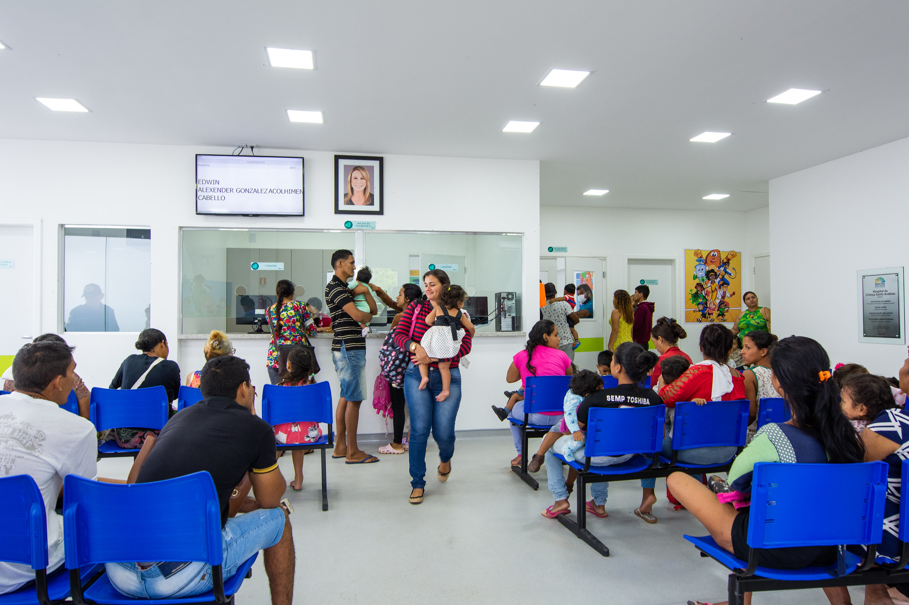
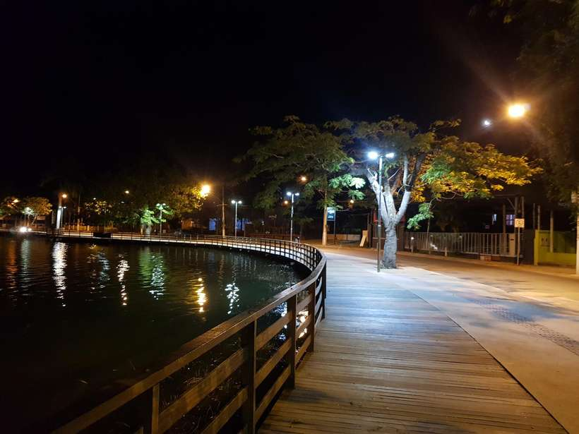

Bairro de Lagoa Santa concentra 41 casos de COVID-19 na cidade
Localizado na Região Norte, o Palmital é um dos bairros mais populosos da cidade
A velocidade da transmissão do novo coronavírus no Palmital é superior a qualquer outra na cidade. Em 26 de agosto, eram 36 casos no local, e foram cinco novas confirmações em menos de uma semana – nos outros dois bairros, o crescimento foi de um caso em cada, no mesmo período. De acordo com a Secretaria de Saúde de Lagoa Santa, o Palmital é um dos bairros mais populosos do município, com 5.300 pessoas cadastradas na unidade de saúde.
Moradores reclamam de falta de infraestrutura em bairro Palmital em Lagoa Santa MG
Com a pandemia, ficar em casa se tornou uma maneira de salvar a própria vida. Boa parte dos países estabeleceu a política de isolamento social como forma de diminuir o contágio pelo coronavírus. O ideal seria que perto de casa os lagoassantenses conseguissem resolver seus problemas, sem precisar de tirar o carro da garagem ou usar o transporte público. Ao analisarmos o bairro Palmital, região norte da cidade, chegamos a conclusão que os moradores estão abandonados. Falta um supermercado digno, uma distribuidora de água e gás, falta opções de padaria, falta tudo.
Posto de saúde fica sem atendimento nesta terça-feira (06) para reparos na rede elétrica

A Secretaria Municipal de Saúde de Lagoa Santa informou nesta segunda-feira (04) que não haverá atendimento na Unidade Básica de Saúde, localizada no bairro Palmital, excepcionalmente nesta terça-feira (5). A medida ocorre devido ao desligamento programado da rede elétrica informado pela Equatorial Energia, que acontecerá das 10h às 16h, na região onde fica instalada a unidade. A previsão é que o atendimento retorne normalmente na quarta-feira (6).
Moradores de Lagoa Santa relatam noite de apagão e piques de energia

Moradores de diversos bairros dos lados oeste e leste de Lagoa Santa, na Região Metropolitana de Belo Horizonte, relataram que na noite dessa segunda-feira (13/9), ocorreram vários piques de energia e horas de escuridão, que chegou a durar cerca de quatro horas. O medo tomou conta da população, que temia perder os aparelhos eletrodomésticos. Clique aqui para ler a materia completa